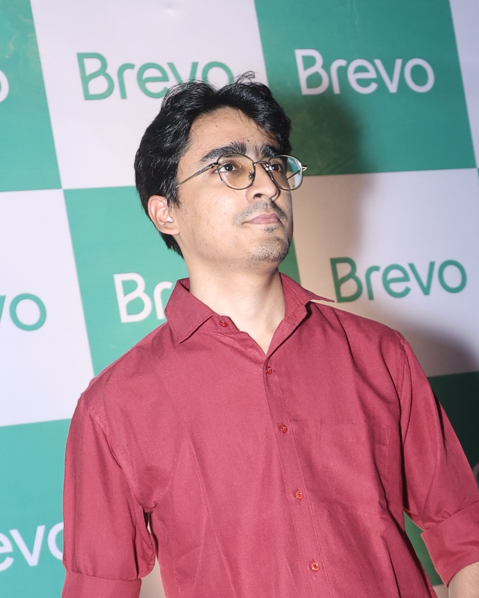

Delhi, India
Shiva Saxena
Krishna conscious devoted artist engineering craftsman tools no bar AI first
I am a senior software engineer at Brevo with an M.S. in Computer Science from Georgia Tech. I build the tools online stores use to reach their customers. Six years in, backend by trade and full stack with AI at my side. Off the clock I am a cinephile, an artist at heart, and a man who likes to keep his life aligned with spiritual philosophies.

Work
Where I have worked, and my contributions.
-
Jul 2026 to now
Brevo Senior Software Engineer, Ecommerce business unit
PushOwl joined Brevo in 2022 and in July 2026 the team became Brevo's Ecommerce business unit. Same product, same seat, a wider set of customers: PushOwl plus everything Brevo offers to online stores.
I look after billing across Stripe and Shopify, infrastructure upkeep and upgrades, and technical support for PushOwl, which keeps me close to what merchants actually run into. Lately building for Brevo's ecommerce customers directly: conversion metrics for analytics and ecommerce automations.
-
Aug 2022 to Jun 2026
PushOwl Software Engineer, then Senior Software Engineer from Jan 2023. Remote.
Four years inside one product, most layers of it. Upgraded the Kubernetes cluster, which touched every AWS service we run. Moved webhook processing to tiered queues, taking the backlog from four days to under ten minutes at 1.5M+ webhooks an hour. Migrated a legacy database of heavy JSON columns to a current PostgreSQL with a normalised data model. Built the data sync from Shopify into Brevo, including Shopify Markets, and standalone account creation outside Shopify.
Collaborated on the Shopify Marketing Automation integration, opt-in flows, and the AI agents in MagicFit, my first front-end work in production, in Remix and React. Ran ReachBee's reporting, billing and SMS sending until that app was retired, and worked on reducing email suspension cases. The first months were Django, Celery and webhook handling on the Shopify app, and the early work on ReachBee.
-
Oct 2020 to Jul 2022
Fueled Backend Apprentice, Backend Engineer, then Engineer, Web Services. Remote.
A product agency, so each project was a new client and a new stack. As an apprentice, built and load-tested the Q&A APIs for Tony Robbins' Date with Destiny virtual conference with Locust, on Django REST Framework. As a backend engineer, built the mobile SDK backend for CLEAR's Secure Identity product, App Attestation and proxy APIs in Java on Dropwizard, and started the customer data sync between Beacon Health Options' Django backend and their enterprise system. In the last stretch, finished and ran that sync, and built a game-progress sync for Everfi's WORD Force in FastAPI, based on the diff-match-patch idea, so players could pick up where they left off across devices.
-
2017 to 2020
Before that
Answered computer science questions for students at Chegg, part-time, in final year. Wrote tutorials at TheGeekyWay. Volunteered at PyCon India 2017 and spent a summer with DGPLUG learning how open source works, while finishing my bachelor's.
The toolbox, as of 2026
Study
Being a good student has always been my X factor.
-
Jan 2021 to Aug 2026
Georgia Institute of Technology M.S. in Computer Science, Artificial Intelligence specialization. College of Computing, Atlanta.
3.9 / 4.0 GPA Verify on Parchment
Machine Learning, Knowledge-Based AI, Machine Learning for Trading, AI Ethics and Society, Database System Design, Computer Networks, Network Security, Software Development Process, Human-Computer Interaction, Digital Marketing. Built an ARC-AGI puzzle solver for KBAI, a database application end to end with a team, and a series of controlled ML studies on multiclass classification comparing supervised, unsupervised and optimisation methods.
-
Aug 2016 to Oct 2020
Guru Gobind Singh Indraprastha University B.Tech in Information Technology. Dr. Akhilesh Das Gupta Institute, Delhi.
8.93 / 10 CGPA
Made
A short shelf, on purpose. Older projects are retired and new ones are on the bench.
-
Handy Dev Tools
Twenty-odd developer utilities that run entirely in your browser. JSON, base64, hashes, colour, timestamps, regex, and the rest of the things I kept opening sketchy websites for. React and TypeScript, nothing leaves your machine.
-
Writing, 2017 to 2019
Long-form tutorials for TheGeekyWay while at university. The ones people still find: how SSH works, a hands-on guide to GPG keys, and what dotfiles are.
Compass
The person behind the résumé.
- Krishna conscious
- I have been a spiritual seeker since school. ISKCON's Krishna conscious philosophy answered the questions I had about religion and the itch to understand it, and it stayed. It is part of who I am now. Outside work and play, this is the part of life that gives the rest its meaning.
- Devoted artist
- I like things organised and I like making things: drawing, craft, ideas on paper, trying something new for the sake of it. Software gets the same treatment. Proportion, restraint and finish matter to me as much as correctness does.
- Engineering craftsman
- I care about the product more than the diff. I want to be in the planning conversation, understand why a feature matters to the merchant, and stay with it after release until it is actually being used. Along the way I keep the team posted on Slack, ask early, and try to leave no one surprised.